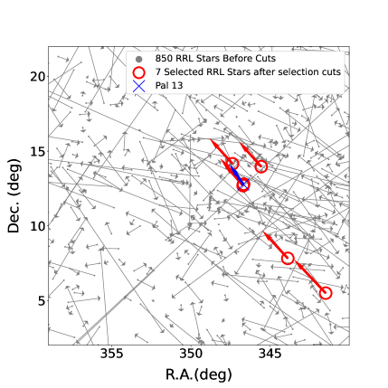
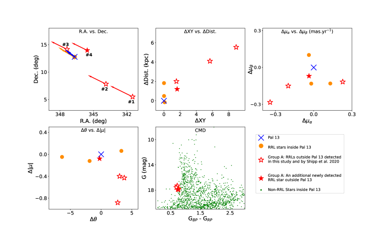
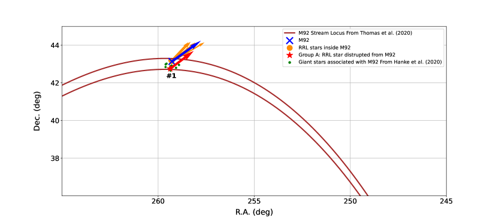
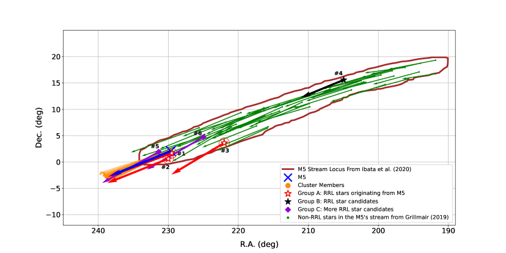
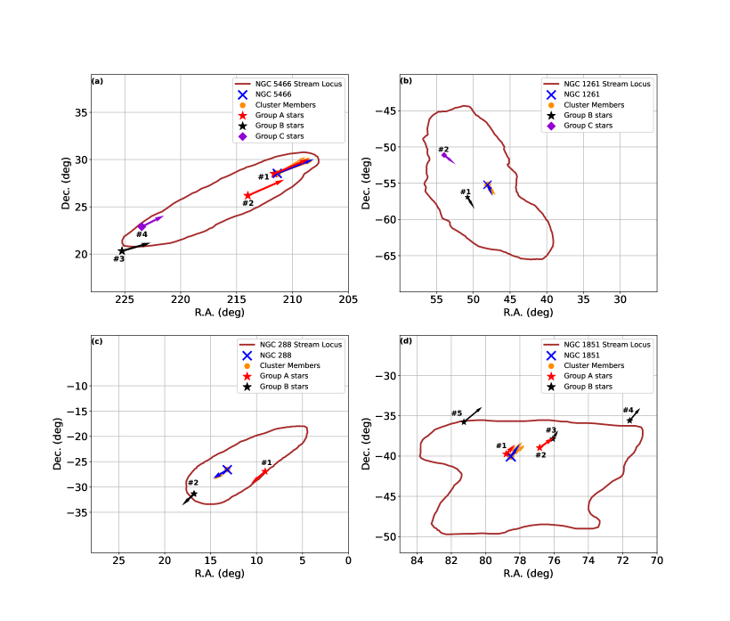
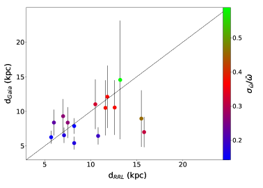

نجوم RR Lyrae في التيارات النجمية باستخدام Gaia: الهاربات
الملخص
نسعى إلى تعرّف نجوم RR Lyrae (RRL) في التيارات النجمية التي ربما أفلتت من سبعة عناقيد كروية (GCs)، اعتمادا على الحركات الذاتية والمسافات ومخططات اللون-القدر وخصائص أخرى مستخرجة من قاعدة بيانات الإصدار المبكر الثالث لبيانات Gaia 3 (EDR3). وعلى وجه التحديد، نطابق فهرسين كبيرين لنجوم RRL (من Gaia DR2 ومسح Catalina Sky Survey) أحدهما مع الآخر ومع قاعدة بيانات EDR3، فنحصل في النهاية على عينة تضم 150,000 نجما فريدا من نوع RRL. نحسب المسافات إلى نجوم RRL باستخدام علاقتي القدر المطلق-الفلزية – [Fe/H] و – [Fe/H]، ونعتمد قيم [Fe/H] للعناقيد الكروية من دراسات طيفية مختلفة. كما نقيّد بحثنا بالمناطق التي سبق أن اقترحت أو عُرّفت فيها تيارات نجمية مرتبطة بالعناقيد الكروية في دراسات أخرى. نحدد 24 من نجوم RRL التي ربما أفلتت من العناقيد الكروية السبعة الآتية: Palomar 13 (Pal 13)، وNGC 6341 (M92)، وNGC 5904 (M5)، وNGC 5466، وNGC 1261، وNGC 288، وNGC 1851. نعرض نتائجنا في الجدول 2.
1 المقدمة
تُعد مجرة درب التبانة إحدى أكثر المجرات دراسة في الكون، ومع ذلك فإن تاريخ تشكلها وتطورها وديناميكيتها وخصائص المادة المظلمة فيها ليست مفهومة فهما كاملا. غير أن المسوح واسعة السماء أتاحت، خلال العقود الماضية، لعلماء الفلك رسم خرائط مفصلة لأجزاء مختلفة من المجرة. وقد كشف ذلك حقائق كثيرة كانت خفية عن بعض الأحداث التاريخية التي وقعت خلال مليارات السنين الماضية، ولا سيما في هالتها.
فعلى سبيل المثال، اكتُشفت خلال العقدين الماضيين بنى فرعية متنوعة، وكثافات زائدة، وتيارات نجمية. ففي البداية اكتُشفت أكبر البنى الفرعية وأكثرها كثافة وبروزا (Ibata et al., 1994; Grillmair et al., 1995; Odenkirchen et al., 2001; Newberg et al., 2003; Bell et al., 2008; Jordi & Grebel, 2010)، ومع ازدياد حساسية المسوح واسعة السماء بدأت بنى فرعية أكثر انتشارا وأقل كثافة بالظهور، مما ساعدنا على فهم عملية تطور المجرة بصورة أفضل (مثلا، Vivas & Zinn 2006; Duffau et al. 2006; Belokurov et al. 2007; Carollo et al. 2007; Sesar et al. 2010; Martin et al. 2013; Bernard et al. 2014; Malhan et al. 2018; Shipp et al. 2018; Stringer et al. 2019، وغيرها). وفي عدد من الحالات، ظُن أن بعض التيارات المكتشفة في أزمنة ومواضع مختلفة مستقلة وذات أصول مختلفة. وبفضل الرصدات اللاحقة والمحاكاة، اتضح أن بعض هذه التيارات تشترك في الأصول والأسلاف نفسها.
إضافة إلى ذلك، كُشفت نقاط انعطاف مختلفة في هالة المجرة باستخدام طرائق متعددة. وترتبط نقاط الانعطاف هذه بانكسارات في قوانين القوى للهالة، وتعكس سيناريوهات تشكل مختلفة بين الهالة الداخلية والخارجية (مثلا، Bullock & Johnston 2005; Johnston et al. 2008; Das et al. 2016; Drake et al. 2013a). وباختصار، يُعتقد أن الهالة الداخلية تشكلت أساسا عبر تراكم أنظمة خارجية ضخمة وعمليات تشكل نجمي موضعية، في حين تشكلت الهالة الخارجية أساسا من اندماجات أنظمة أصغر وأقدم (مثلا، De Lucia & Helmi 2008; Schlaufman et al. 2009; Font et al. 2011; Beers et al. 2012; Rodriguez-Gomez et al. 2016). وعادة ما تكون هذه النجوم الأخيرة قديمة وفقيرة بالمعادن، ودراستها ذات أهمية كبيرة لفهم تطور المجرات.
لذلك فإن الآثار النجمية ضرورية لدراسة خصائص نجوم الهالة وحركياتها وتتبع أصولها. وسيؤدي تحديد أصول نجوم الهالة والتيارات النجمية إلى تحسين فهمنا لتطور المجرات بدرجة كبيرة، كما سيغذي نماذج المحاكاة. وحتى الآن، كُشف أكثر من 70 تيارا نجميا في هالة درب التبانة، إلا أنها لم تُدرس جميعا دراسة مكثفة، ولا تزال أصولها في حالات كثيرة غامضة (Mateu et al., 2018).
كما يُستفاد مما سبق، تشكل بعض نجوم الهالة داخل المجرة، بينما أسهمت مجرات قزمة وعناقيد كروية (GCs) تراكمت على درب التبانة في تكوين بعضها الآخر. وتؤدي الاضطرابات المدية إلى نشوء تيارات من النجوم في جوار الأنظمة المتراكمة. وبوجه عام، يمثل تحديد نجوم الهالة التي كانت تنتمي سابقا إلى أنظمة متراكمة أكبر تحديا صعبا.
ولتأكيد ما إذا كان تيار من نجوم الهالة قد نشأ من عنقود كروي مثلا، ينبغي أن تكون أعمار النجوم والعناقيد الكروية وفلزيتها وسرعاتها الفضائية متقاربة. وبالنظر إلى عدد النجوم على أي خط بصر في الهالة، وإلى رقة بعض التيارات وخفوتها، وإلى امتداد بعض التيارات على درجات عدة في السماء، فقد يكون ذلك مستهلكا للوقت وغير ممكن دائما.
في السنوات القليلة الماضية، استُخدمت قاعدة بيانات Gaia (Gaia Collaboration et al., 2016) للبحث عن نجوم هالة أفلتت من مجرات قزمة وعناقيد كروية لتكوّن تيارات نجمية.
فعلى سبيل المثال، باستخدام الإصدار الثاني من بيانات بعثة Gaia (Gaia DR2؛ Gaia Collaboration et al. 2018)، كشف Thomas et al. (2020) وSollima (2020) تيارا نجميا حول NGC 6341 (M92)، وذلك باستخدام تقنيات ترشيح مختلفة، إضافة إلى معلومات الألوان والمقادير والتزيحات المنظرية والحركة الذاتية (PM) لنجوم الفرع الأفقي الأزرق (BHB) والتتابع الرئيسي (MS) وفرع العمالقة الحمر (RGB). أجرى Thomas et al. (2020) محاكاة N-body، واقترحوا أن التيار حول M92 حديث نسبيا وتكوّن خلال آخر 500 Myr.
درس Shipp et al. (2020) ذيولا مدية حول العنقود الكروي Palomar 13 (فيما يلي Pal 13)، باستخدام بيانات فوتومترية من مسح Dark Energy Camera Legacy Survey (DECaLS11 1 https://www.legacysurvey.org/decamls/) التابع لمسوح DESI Legacy Imaging Surveys (Dey et al., 2019). واستخدموا تقنية المرشح المطابق وتمكنوا من كشف ذيول مدية حول Pal 13 مصطفة مع الحركة الذاتية لـ Pal 13. وعلى وجه التحديد، استندت نتائجهم إلى نجوم عند الحافة الزرقاء للتتابع الرئيسي، لأن هذه النجوم توفر نسبة إشارة إلى ضجيج عالية لتقنية المرشح المطابق. ولم يقتصر الأمر على ذلك، بل حددوا أيضا ستة نجوم RR Lyrae (RRL)، يقع ثلاثة منها في ذيول Pal 13 وثلاثة داخل العنقود الكروي. وقد أتاحت لهم هذه النتائج تقدير مسافة العنقود ولمعانه الكلي.
استخدم Hanke et al. (2020) بيانات كيموديناميكية سباعية الأبعاد من بيانات Gaia DR2 وأطياف Sloan Digital Sky Survey (SDSS، York et al. 2000; Abolfathi et al. 2018)، وحددوا عددا كبيرا من عمالقة حقل الهالة التي يرجح أنها نشأت في أكثر من عشرة عناقيد كروية. واستخدموا نجوم RRL لتقدير المسافات إلى عدد من التيارات المكتشفة.
علاوة على ذلك، حدد Vivas et al. (2020) نجوم RRL تنتمي إلى مجرات قزمة فائقة الخفوت (UFD)، باستخدام فهرس Gaia DR2 لنجوم RRL (Clementini et al., 2019). وبناء على مواقع النجوم ومقاديرها ومسافاتها وحركاتها الذاتية، ربط Vivas et al. (2020) 47 نجما من نوع RRL بـ 14 مجرة UFD (انظر الجدولين 1 و2 في Vivas et al. 2020 للاطلاع على قائمة كاملة بنتائجهم).
بحث Price-Whelan et al. (2019) عن نجوم RRL تنتمي إلى التيار النجمي Palomar 5 (فيما يلي Pal 5) (Odenkirchen et al., 2001). واستخدموا فهرس PanSTARRS-1 (PS1؛ Kaiser et al. 2002; Chambers et al. 2016) لنجوم RRL من Sesar et al. (2017)، وطابقوه مع بيانات Gaia DR2. وحددوا 27 نجوم RRL يُرجح بقوة أنها أعضاء في تيار Pal 5، اعتمادا على الخصائص الحركية، وقدروا مسافة العنقود بأنها 20.6 0.2 kpc.
أثناء إعداد هذه المخطوطة، كشف Ibata et al. (2020) تيارات هالية متعددة باستخدام فهارس Gaia DR2 والإصدار المبكر الثالث للبيانات 3 (EDR3؛ Gaia Collaboration et al. 2020a, b; Riello et al. 2020). وعلى وجه التحديد، استخدموا خوارزمية STREAMFINDER (Malhan & Ibata, 2018) وتتبعوا مواضع تيارات مختلفة على السماء.
في هذه الورقة، نبحث عن نجوم RRL ربما أفلتت من سبعة عناقيد كروية: Pal 13، وNGC 6341 (فيما يلي M92)، وNGC 5904 (فيما يلي M5)، وNGC 5466، وNGC 1261، وNGC 288، وNGC 1851. ندرس هذه العناقيد الكروية الأخيرة لأن تيارات نجمية مرتبطة بها كانت قد اقتُرحت أو حُددت سابقا، كما أننا نعمل حاليا على تحليل أعمق لعناقيد كروية أخرى (Abbas et al. 2021، قيد الإعداد).
نجوم RRL نجوم متغيرة نابضة ذاتيا وقصيرة الدور، تقل أدوارها عن 1.3 يوم (d). وهي نجوم في مرحلة حرق الهيليوم في النواة وتقع ضمن شريط عدم الاستقرار في مخطط Hertzsprung–Russell (Smith, 1995; Layden et al., 1996). توجد عدة أنماط فرعية من نجوم RRL تُصنّف بحسب أدوارها وسعاتها وأشكال منحنيات ضوئها. وأكثر النمطين الفرعيين عددا هما نجوم RRc وRRab.
ثمة في الأساس طريقتان يمكن أن يفقد بهما العنقود الكروي نجوما. إحداهما عبر تأثيرات ديناميكية داخلية (مثل اللقاءات ثنائية الجسم)، والأخرى بفعل المجال الثقالي الخارجي. ومن ثم، فإن كشف نجوم خارج نصف القطر المدي لا يعني بالضرورة أن العنقود الكروي يتفكك، مع أنه قد يكون كذلك، ولا سيما عندما تُكشف ذيول مدية وإذا بدت نجوم RRL مرتبطة بتلك الذيول. ولذلك فإن تحديد النجوم الواقعة خارج نصف القطر المدي وارتباطاتها المحتملة بالعناقيد الكروية مهم لفهم أفضل للتطور الديناميكي الداخلي والخارجي للعناقيد الكروية، ويمكن أن يمنحنا تصورا أشمل عن تاريخ تطور المجرة.
نستخدم في هذه الورقة نجوم RRL تحديدا لأسباب عدة. فقد استُخدمت هذه النجوم أدوات قوية لاستقصاء تاريخ تراكم درب التبانة (مثلا، Sesar et al. 2010; Abbas et al. 2014; Drake et al. 2014; Fabrizio et al. 2019; Medina et al. 2020; Prudil et al. 2021). وقد شهد بعضها المراحل المبكرة من تشكل المجرات، ومن ثم تعمل بوصفها أحافير في الآثار النجمية. كما يسهل نسبيا التعرف إليها من أشكال منحنيات ضوئها ما دامت الرصدات متعددة العصور متاحة. وأخيرا وليس آخرا، تعمل نجوم RRL شموعا معيارية تنطبع معلومات المسافة في خصائصها. فعلى سبيل المثال، اشتق Muraveva et al. (2018) علاقة جديدة بين القدر المطلق والفلزية في نطاق Gaia G ( – [Fe/H]) نستخدمها في هذه الدراسة.
للبحث عن النجوم الهاربة، نستخدم فهرس Gaia DR2 لنجوم RRL (Clementini et al., 2019)، إضافة إلى الفهرس الكامل لنجوم RRL من مسح Catalina Sky Survey (فيما يلي فهرس CRTS؛ Drake et al. 2013a, b, 2014; Torrealba et al. 2015; Drake et al. 2017). طابقنا كلا الفهرسين أحدهما مع الآخر ومع قاعدة بيانات Gaia EDR3، وانتهينا إلى 150,000 نجما فريدا من نوع RRL. ثم استخدمنا هذا الفهرس الكامل للبحث عن نجوم RRL ربما نشأت في العناقيد الكروية السبعة، استنادا إلى المسافات والحركات الذاتية ومخططات اللون-القدر (CMDs) ومعلومات إحصائية مختلفة. كما استند بحثنا إلى مواقع بعض التيارات التي نعتمدها من Ibata et al. (2020) وThomas et al. (2020).
تُنظم هذه الورقة على النحو الآتي. تُعرض مسوح Gaia وCRTS بإيجاز في القسم 2، حيث تناقش أيضا الطرائق المستخدمة للعثور على نجوم RRL. وفي القسم 3، نصف طريقتنا المعتمدة وقطوع الاختيار للعثور على نجوم RRL التي يرجح أكثر أنها انتشرت من العناقيد الكروية المدروسة. وفي القسم نفسه، نناقش أيضا الطريقة المستخدمة لإيجاد المسافات إلى نجوم RRL، ونراجع مستويات اكتمال الفهرس ونقائه. وفي القسم 4، نعرض بإيجاز خصائص كل عنقود كروي ونطبق طريقتنا للعثور على نجوم RRL هاربة محتملة. كما ننشر قائمة بنجوم RRL الهاربة في الجدول 2. وأخيرا، نلخص عملنا ونتائجنا في القسم 5.
2 البيانات
تستند هذه الدراسة إلى فهرسين لنجوم RRL من مسحين سماويين: Gaia وCRTS.
2.1 مسح Gaia
صُممت Gaia لتكون أكبر بعثة قياس فلكي دقيقة، ولترصد مليارات الأجرام السماوية مرارا خلال فترة خمس سنوات. وتحتوي فهارس Gaia (Gaia Collaboration et al., 2016, 2018, 2020a) على مجموعة بيانات فوتومترية وقياسية فلكية تضم المواضع والتزيحات المنظرية ومتوسطات الحركات الذاتية لأهدافها. ومؤخرا، أُصدر Gaia EDR3 في 3 ديسمبر 2020. وقد حسن الإصدار الجديد معلومات الحركات الذاتية والتزيحات المنظرية لأكثر من 1.4 مليار مصدر، مع سنة إضافية من الرصدات مقارنة بـ Gaia DR2.
2.1.1 نجوم RRL من Gaia
باستخدام القياسات الفوتومترية الزمنية متعددة النطاقات في Gaia DR2، يقدم Clementini et al. (2019) فهرسا يضم 140,000 نجما من نوع RRL، منها 98,000 نجما من النوع RRab، أما 40,000 نجما المتبقية فمن النوع RRc.
يوفر فهرس نجوم RRL من Clementini et al. (2019) معرّف Gaia ، والمواضع، والمقادير المتوسطة في ثلاثة نطاقات عريضة ( و و)، والسعات في هذه النطاقات المختلفة (AG وABP وARP)، والأدوار بالأيام (PG)، وعدد الرصدات في النطاقات المختلفة، ومعلومات أخرى.
2.2 مسح CRTS
استخدم CRTS ثلاثة تلسكوبات أرضية مختلفة تقع في ثلاثة مواقع مختلفة. وقد زُودت التلسكوبات الثلاثة جميعها بكاميرات CCD غير مرشحة ذات 4k 4k. كان الهدف الرئيسي لـ CRTS اكتشاف الظواهر العابرة، ولذلك رصد السماء مرات متعددة. كما استُخدمت بياناته لاستقصاء تغيرية نجوم مثل نجوم RRL. وفي المتوسط، رُصد كل نجم RRL 200 مرة.
2.2.1 نجوم RRL من CRTS
نُشر، في سلسلة من الأوراق، الفهرس الكامل المكوّن من 42,000 نجما من نوع RRL ( 32,000 و9,000 نجما من النوعين RRab وRRc، على التوالي) اكتشفتها بيانات CRTS (Drake et al., 2009, 2013a, 2013b, 2014; Torrealba et al., 2015). ويتضمن فهرس CRTS لنجوم RRL معرّف CRTS ، والمواضع، والمقادير المتوسطة ()، وسعات التغير (AV)، والأدوار بالأيام (PV)، وعدد الرصدات ()، والمسافات بافتراض قدر مطلق متوسط قدره = 0.61، ومعلومات أخرى.
3 المنهجية
نستخدم الفهارس المدمجة من Gaia وCRTS الموصوفة في القسمين 2.1.1 و2.2.1، على التوالي. نبدأ بمطابقة كلا الفهرسين مع EDR3 (Gaia Collaboration et al., 2020a) ومع أحدهما الآخر اعتمادا على الإحداثيات السماوية وباستخدام نصف قطر 2.
يحتوي الفهرس الكامل النهائي على 150,000 نجما فريدا من نوع RRL. يوجد نحو 75 من نجوم RRL في فهرس Gaia وليس في فهرس CRTS، ويوجد 9 منها في فهرس CRTS وليس في فهرس Gaia. أما النسبة المتبقية، 16 من نجوم RRL، فتوجد في كلا الفهرسين. يغطي مسح Gaia جزءا أكبر بكثير من السماء مقارنة بمسح CRTS، ومن ثم يتوقع المرء أن يتضمن فهرس Gaia عددا أكبر من نجوم RRL.
3.1 مستويات الاكتمال والنقاء
تأتي نجوم RRL في الفهرس الكامل النهائي من مسحين مختلفين لهما مستويات اكتمال ونقاء مختلفة. ويعكس مستوى الاكتمال الكسر المستعاد من نجوم RRL، في حين يعكس مستوى النقاء كسر نجوم RRL الحقيقية في الفهرس. ويبلغ مستوى الاكتمال في فهرس CRTS 85، ومستوى النقاء 80 للأجرام الأقرب من 25 kpc، في حين يبلغ متوسط مستوى الاكتمال لنجوم RRL من Gaia 60–70 (Clementini et al., 2019). وتنخفض مستويات الاكتمال والنقاء، كلاهما، مع ازدياد السطوع، ويمكن أن تختلف من منطقة في السماء إلى أخرى. فعلى سبيل المثال، تبلغ مستويات الاكتمال والنقاء في فهرس Gaia RRL 95 في مناطق سحابي ماجلان وانتفاخ درب التبانة، وتنخفض إلى قيم أدنى في أجزاء أخرى من السماء.
نظرا إلى أننا ندرس نجوم RRL حول عناقيد كروية قريبة نسبيا (مدى مسافة 7.5–26.0 kpc)، وبما أننا استهدفنا مناطق تتداخل فيها بصمة كلا فهرسي نجوم RRL، فإننا نعتقد أن مستويات الاكتمال والنقاء في فهارسنا المدمجة تساوي على الأقل قيم فهرس CRTS أو تتجاوزها (أي مستويات اكتمال ونقاء 85 و 80، على التوالي). وإضافة إلى ذلك، فحصنا بصريا منحنيات الضوء المطوية لجميع نجوم RRL التي اجتازت قطوع الاختيار باستخدام CRTS وGaia، ووجدنا أن تصنيفاتها التغيرية موثوقة بدرجة عالية.
3.2 المسافات والحركات الذاتية
نعتمد مقاربات مختلفة لإيجاد المسافات النهائية إلى نجوم RRL (فيما يلي ).
بالنسبة إلى نجوم RRL الموجودة حصرا في فهرس Gaia، نستخدم علاقة القدر المطلق -الفلزية ( – [Fe/H]) من Muraveva et al. (2018) لحساب . أما المسافات لنجوم RRL الموجودة في فهرس CRTS وليس في فهرس Gaia فتحسب باستخدام علاقة القدر المطلق -الفلزية ( – [Fe/H]) من Drake et al. (2013a). لم نستخدم المسافات المقدمة في فهارس CRTS لأنها حُسبت باستخدام مقادير مطلقة وفلزيات ثابتة. وأخيرا، حُسبت مسافات نجوم RRL المتاحة في كلا الفهرسين مرتين باستخدام علاقتي – [Fe/H] و – [Fe/H] على بيانات Gaia وCRTS، على التوالي. وفي هذه الحالات الأخيرة، عُدّت متوسط المسافتين المحسوبتين. حُسبت علاقتا – [Fe/H] و – [Fe/H] المعتمدتان في هذه الدراسة باستخدام نجوم RRab وRRc. ومع ذلك، نظرا إلى أن نجوم RRab تمتلك منحنيات ضوئية أوضح تميزا، وسعات نبض ومستويات نقاء أكبر من نجوم RRc، فإن علاقات القدر المطلق-الفلزية تكون عادة أكثر موثوقية عند حساب المسافات إلى نجوم RRab. ومع ذلك، يمكن استخدام هذه العلاقات، وقد استُخدمت فعلا، لإيجاد المسافات إلى نجوم RRc أيضا. وأخيرا، ولإيجاد المسافات، نعتمد قيم الاحمرار من خرائط الغبار لـ Schlafly & Finkbeiner (2011) لتصحيح المقادير من أجل الانطفاء، باستخدام حزمة Python dustmaps (Green, 2018).
نظرا إلى أن المسافات إلى نجوم RRL تُحسب باستخدام علاقتي القدر المطلق-الفلزية و الحساستين للفلزية، فإننا نختار مناطق حول العناقيد الكروية التي ندرسها، ونعتمد [Fe/H] للعنقود الكروي المختار، ونستخدم علاقتي – [Fe/H] و – [Fe/H] لإيجاد المسافة إلى كل نجم RRL. بعد ذلك، نعتمد متوسطات الحركات الذاتية للعناقيد الكروية من Vasiliev (2019). وتُلخص القيم المختلفة المعتمدة، بما فيها المسافات إلى العناقيد الكروية (DGC)، في الجدول 1.
| GC | R.A.22 2 Equatorial J2000.0 R.A. and Dec. are given in decimal degrees. (deg) | Dec.2 (deg) | DGC33 3 Vasiliev (2019) and Harris (1996). (kpc) | (,)44 4 From Vasiliev (2019), not corrected for the solar reflex motion. mas.yr-1 | err4 mas.yr-1 | [Fe/H] | NRRL55 5 Number of RRL stars that might have escaped from the assigned GC. See Table 2 for more info. |
| Pal 13 | 346.685 | 12.772 | 26.0 | (1.615,0.142) | (0.101,0.089) | 1.9166 6 Koch & Côté (2019). | 1–4 |
| M92 (NGC 6341) | 259.281 | 43.136 | 8.3 | (4.925,0.536) | (0.052,0.052) | 2.3577 7 Carretta et al. (2009). | 1–2 |
| M5 (NGC 5904) | 229.638 | 2.081 | 7.5 | (4.078,9.854) | (0.047,0.047) | 1.2988 8 Harris (1996). | 1–7 |
| NGC 5466 | 211.364 | 28.534 | 16.0 | (5.412,0.8) | (0.053,0.053) | 1.988 | 1–5 |
| NGC 1261 | 48.068 | -55.216 | 17.299 9 Arellano Ferro et al. (2019). | (1.632,2.038) | (0.057,0.057) | 1.429 | 1–5 |
| NGC 288 | 13.188 | -26.583 | 8.9 | (4.267,5.636) | (0.054,0.053) | 1.328 | 1–5 |
| NGC 1851 | 78.528 | 40.047 | 12.1 | (2.12,0.589) | (0.054,0.054) | 1.188 | 1–6 |
3.3 قطوع الاختيار
نبدأ بمقارنة خصائص العناقيد الكروية (أي المسافات والحركات الذاتية) بخصائص نجوم RRL المحيطة بها. وفيما يلي، تُصحح جميع قيم الحركة الذاتية من أجل حركة المنعكس الشمسي باستخدام حزمة GALA (Price-Whelan, 2017) ما لم يُذكر خلاف ذلك. وللتبسيط، سنحذف أيضا علامة النجمة من . أولا، نختار جميع نجوم RRL حول العناقيد الكروية التي ندرسها ونطبق قطوع الاختيار الآتية:
| (1) |
| (2) |
| (3) |
حيث إن و هما المسافتان لكل عنقود كروي وكل نجم RRL، على التوالي. و و هما معيار الحركة الذاتية المصححة وزاويتها لكل عنقود كروي، على التوالي (وبالمثل بالنسبة إلى و).
تستبعد المعادلة 1 نجوم RRL البعيدة جدا عن العنقود الكروي المختار، في حين تختار المعادلة 2 نجوما لها قيم معيار حركة ذاتية لا تتجاوز 1.5 من قيمة العنقود الكروي المختار. وقد اعتمدت Thomas et al. (2020) قيمة 2 للقطع الانتقائي نفسه، لكننا قررنا أن نكون أكثر تحفظا لتحقيق مستوى نقاء أعلى. وأخيرا، تزيل المعادلة 3 النجوم التي لها اتجاهات حركة ذاتية تختلف اختلافا متوسطا عن اتجاه العناقيد الكروية المختارة.
كمثال، تُرسم مواقع (R.A. وDec. بالدرجات) واتجاهات الحركات الذاتية المصححة لجميع نجوم RRL في جوار Pal 13 باللون الرمادي في الشكل 1. وتُعرض النجوم التي اجتازت قطوع الاختيار الأولى (المعادلات 1 و2 و3) بدوائر حمراء مفتوحة. ويُعرض موقع Pal 13 وسهم حركته الذاتية باللون الأزرق في الشكل الأخير. خفضت هذه القطوع عدد مرشحي نجوم RRL في جوار Pal 13 من 850 إلى 7 نجوم فقط، منها 3 أعضاء في العنقود.

4 التحليل
في هذا القسم ندرس خصائص نجوم RRL حول كل واحد من العناقيد الكروية السبعة، اعتمادا على المسافات والحركات الذاتية ومنحنيات الضوء وقطوع الاختيار ومخططات CMD وخصائص أخرى.
نعرض نتائجنا في الجدول 2 ونخصص لكل نجم RRL مجموعة حرفية (A أو B أو C). وتعكس المجموعة الحرفية مدى ثقتنا بأصل كل نجم RRL. فعلى سبيل المثال، يُرجح بقوة أن تكون نجوم RRL المخصصة للمجموعة A قد نشأت في العنقود الكروي المعين. أما النجوم المختارة بثقة متوسطة فتُدرج في المجموعة B، في حين تُدرج النجوم المختارة بثقة أقل في المجموعة C. ويستند احتمال ارتباط النجوم بالعناقيد الكروية (المجموعات A وB وC) إلى مواقع النجوم المرشحة في مخططات 2D المختلفة وإلى مخطط CMD لكل عنقود كروي (مثلا، انظر القسم 4.1).

4.1 Pal 13
Pal 13 عنقود كروي خافت (MV بين 3.7 mag و2.8 mag)، ومنخفض الكتلة وقليل اللمعان، يقع في الهالة على مسافة 26 kpc. وقد كُشفت تجمعات متعددة في Pal 13، ونوقشت آثار فقدانه للكتلة (Tang et al., 2020).
لقد نوقش مرارا ما إذا كان Pal 13 يتعرض لاضطراب مدي. ومؤخرا، اقترح Piatti & Fernández-Trincado (2020) وجود نجوم تفلت من العنقود. وكما نوقش في القسم 1، حدد Shipp et al. (2020) ذيولا حول Pal 13 باستخدام تقنية المرشح المطابق المعتمدة على نجوم عند الحافة الزرقاء للتتابع الرئيسي. وإضافة إلى ذلك، وجدوا دلائل على تيارات مدية حول Pal 13 من خلال كشف ستة نجوم RRL، ثلاثة منها تقع في ذيله.
نظرا إلى أن هدفنا هو العثور على نجوم RRL حول العناقيد الكروية، نبدأ بتطبيق طريقتنا وقطوع اختيارنا على Pal 13، ثم نقارن نتائجنا بنتائج Shipp et al. (2020). نعتمد قيم [Fe/H]Pal13 وDPal13 لـ Pal 13 المدرجة في الجدول 1، ونحسب الحركة الذاتية المصححة لحركة المنعكس الشمسي (باستخدام حزمة GALA من Price-Whelan 2017) اعتمادا على الحركة الذاتية الخام المقدمة في الجدول الأخير.
كما هو مبين في الشكل 1، توجد سبعة نجوم RRL حول Pal 13 (ثلاثة أعضاء في العنقود وأربعة تقع خارجه) اجتازت قطوع اختيارنا. ومن بين هذه النجوم، سبق أن حدد Shipp et al. (2020) ستة. نفحص خصائص هذه النجوم بعناية ونقارنها بخصائص Pal 13.
يعرض الشكل 2 المخططات (R.A. مقابل Dec.)، و(XY مقابل Dist.)، و( مقابل )، و( مقابل ) لـ Pal 13 ونجوم RRL السبعة حول Pal 13. وإضافة إلى ذلك، نرسم مخطط CMD (G مقابل G) لـ Pal 13 باستخدام بيانات Gaia EDR3.
XY هو الفصل الكروي بين العنقود الكروي وكل نجم RRL، ويُحسب باستخدام Astropy1010
10
https://docs.astropy.org/en/stable/coordinates/matchsep.html (Astropy Collaboration et al., 2013, 2018). ويقيس Dist.1111
11
. وبالمثل بالنسبة إلى R.A.، وDec.،
، و، و، و الفرق في المسافات بين العنقود الكروي ونجوم RRL، وبالمثل بالنسبة إلى 11 و11 و11 و.

في الشكل 2، تمثل علامة التقاطع الزرقاء Pal 13. وتمثل الدوائر البرتقالية الممتلئة (3 نجوم) نجوم RRL داخل Pal 13. أما النجيمات الحمراء الأربع فتمثل نجوم RRL التي كشفناها خارج Pal 13. وثلاثة من هذه النجوم (النجم و و) سبق أن كشفها Shipp et al. (2020)، كما حُدد نجم RRL إضافي في دراستنا (نجيمة حمراء ممتلئة، النجم ). وتمثل الدوائر الخضراء الممتلئة نجوما غير RRL تنتمي إلى Pal 13.
نعتقد أن النجوم الأربعة المعروضة بالأحمر في الشكل 2 قد أفلتت بالفعل من Pal 13 (نجوم المجموعة A)، وتقدم دليلا على اضطرابه. نعرض خصائص هذه النجوم ومجموعاتها في الجدول 2.

4.2 M92 (NGC 6341)
M92 عنقود كروي لامع وفقير بالمعادن يقع في كوكبة Hercules. وقد كُشفت نجوم خارج نصف القطر المدي حول M92 من قبل Jordi & Grebel (2010)، ومؤخرا كُشف تيار حول M92 من قبل Sollima (2020) وThomas et al. (2020). وعلى وجه التحديد، استخدم Thomas et al. (2020) نجوم BHB وMS وRGB، ووجدوا أن التيار حول M92 يبلغ طوله 17∘ وعرضه 0.29∘، وقدموا موضعا لمساره.
يوجد 500 نجما من نوع RRL تمتد على مساحة قدرها 250 درجة مربعة حول M92، منها أحد عشر نجما اجتازت قطوع اختيارنا.
في الشكل 3، نرسم مواضع أحد عشر نجما اجتازت قطوعنا، إضافة إلى مسار التيار (خطوط بنية، معتمد من Thomas et al. 2020). ونرسم باللون الأخضر مواضع بعض النجوم العملاقة التي حددها Hanke et al. (2020) على أنها مرتبطة بـ M92.
من بين النجوم الأحد عشر، عشرة أعضاء في العنقود (دوائر برتقالية)، وواحد يقع داخل مسار التيار وبالقرب من العنقود (نجيمة حمراء، النجم 1). ونشير إلى أن الارتباط بين النجم 1 وM92 كان موضع اشتباه سابق (Kundu et al., 2019). إضافة إلى ذلك، يبدو أن النجم 1 وأكثر من خمسة نجوم عملاقة من Hanke et al. (2020) متكتلة في المنطقة نفسها. وبعد مقارنة خصائص النجم 1 بخصائص M92، نعتقد بثقة عالية أن النجم 1 قد أفلت من M92، ولذلك ندرجه في المجموعة A.
4.3 M5 (NGC 5904)
M5 عنقود كروي قريب ولامع يقع في كوكبة Serpens. يقع عند DM5 = 7.5 0.3 kpc (Arellano Ferro et al., 2016)، وله فلزية [Fe/H]M5 = 1.29 0.05 dex.
وجد Jordi & Grebel (2010) دلائل ضعيفة على تيار مدي منبعث من M5. وبعد ذلك، حُدد تيار بطول 50∘ بوصفه ذيلا مديا لاحقا لـ M5، بصورة مستقلة من قبل Grillmair (2019) وIbata et al. (2020). ويقدم Grillmair (2019) موضع 50 نجوما يرجح جدا أنها مرتبطة بـ M5، في حين يرسم Ibata et al. (2020) موضع التيار.
نطبق طريقتنا للبحث عن نجوم RRL داخل مسار تيار M5. نطبق قطوع الاختيار، ونحلل مخططات 2D و3D مختلفة، ونجد ستة نجوم ربما أفلتت من M5. وتُعرض النتائج في الشكل 4. وفي الشكل الأخير، يُمثل موضع التيار المعتمد من Ibata et al. (2020) باللون البني، وتُعرض النجوم غير RRL البالغ عددها 50 من Grillmair (2019) باللون الأخضر.
من بين النجوم الستة، يرجح جدا أن ثلاثة نجوم (1 و2 و3، نجيمات حمراء في الشكل 4) قد أفلتت من M5 (مثلا، المجموعة A)، وأن نجما واحدا (4، نجيمة سوداء) له احتمال أقل للارتباط بـ M5 (المجموعة B)، وأن نجمين إضافيين (5 و6، مربعات بنفسجية) لهما احتمال أضعف للارتباط بـ M5 (المجموعة C). انظر الجدول 2 لمزيد من المعلومات.
4.4 NGC 5466
اكتُشفت ذيول مدية ممتدة حول NGC 5466 من قبل Odenkirchen & Grebel (2004)، ثم كُشف مزيد من تياراته النجمية ودُرست من قبل Belokurov et al. (2006); Grillmair & Johnson (2006); Weiss et al. (2018) وIbata et al. (2020).
نتتبع يدويا مسار التيار لـ NGC 5466 من Ibata et al. (2020)، ونطبق قطوع اختيارنا على النجوم الواقعة داخل مسار التيار أو بالقرب منه.
نجد أن نجمين من نوع RRL أفلتَا من NGC 5466، ويُمثلان بنجيمتين حمراوين في الشكل 5a، ويُعلّمان كنجوم من المجموعة A. ونشتبه أيضا في نجمين إضافيين (أحدهما في المجموعة B والآخر في المجموعة C) ربما تُركا خلف NGC 5466. وتُعرض أعضاء العنقود بدوائر برتقالية، ويمثل NGC 5466 بعلامة تقاطع زرقاء، ويُرسم مسار تيار NGC 5466 من Ibata et al. (2020) باللون البني في الشكل نفسه.
4.5 NGC 1261
NGC 1261 عنقود كروي قديم، يقع على مسافة DNGC1261 = 17.2 0.4 kpc، وله فلزية [Fe/H]NGC1261 = 1.42 0.05 dex (Arellano Ferro et al., 2019).
كُشفت تيارات مرشحة حول NGC 1261 لكنها لم تؤكد في دراسات مختلفة. فعلى سبيل المثال، كشف Shipp et al. (2018) تيارا حول NGC 1261 بتطبيق تقنيات المرشح المطابق على بيانات من Dark Energy Survey (DES؛ Dark Energy Survey Collaboration et al. 2016). وكشف Ibata et al. (2020) بنية مشابهة باستخدام خوارزمية STREAMFINDER (Malhan & Ibata, 2018) على بيانات DR2 وEDR3.
اجتاز نجمان مرشحان قطوع اختيارنا (أحدهما في المجموعة B والآخر في المجموعة C). نرسم موقع NGC 1261 في الشكل 5b. الدوائر البرتقالية الممتلئة أعضاء في العنقود، وتمثل النجيمة السوداء نجوم RRL (المجموعة B، 1)، في حين يمثل المربع البنفسجي نجم RRL قريبا من العنقود وداخل التيار، لكن باحتمال أقل لأن يكون قد أفلت من NGC 1261 (2).

4.6 NGC 288
كشفت دراسات مختلفة سمات مدية محتملة على مسافات مختلفة مرتبطة بـ NGC 288 (مثلا، Leon et al. 2000; Grillmair et al. 2013). ومؤخرا، قدم Shipp et al. (2018) وIbata et al. (2020) أدلة إضافية على خصائص تيار مرتبط بالعنقود الأخير وموقعه. لذلك نبحث عن نجوم RRL تقع بالقرب من موضع هذا التيار الأخير.
في المجمل، نجد نجمين قد يكونان مرتبطين بتيار NGC 288، ونرسمهما في الشكل 5c. النجم 1 المعروض بنجيمة حمراء هو الأرجح ارتباطا بالتيار (مثلا، المجموعة A). وقد اجتاز نجم RRL إضافي قطوعنا، ويُعرض بنجيمة سوداء (2، المجموعة B).
4.7 NGC 1851
حاولت دراسات مختلفة البحث عن سمات مرتبطة بـ NGC 1851، لكن النتائج لم تكن متسقة دائما (مثلا، انظر Olszewski et al. 2009; Carballo-Bello et al. 2018; Shipp et al. 2018; Stringer et al. 2020; Ibata et al. 2020).
يكشف بحثنا خمسة مرشحين من نجوم RRL قد يكونون مرتبطين بتيار NGC 1851، ونعرضهم في الشكل 5d. وعلى وجه التحديد، نجد نجمين من المجموعة A (1 و2) وثلاثة نجوم من المجموعة B (3 و4 و5).
4.8 تزيحات Gaia المنظرية
كما نوقش في القسم 3.2، حُسبت المسافات (dRRL) المعروضة في الجدول 2 باستخدام علاقتي – [Fe/H] و – [Fe/H]. ولأغراض المقارنة، نعيد حساب المسافات إلى هذه النجوم الأخيرة باستخدام تزيحات Gaia EDR3 المنظرية، ويشار إليها فيما يلي بـ dGAIA. نختار النجوم ذات قيم التزيح المنظري منخفضة اللايقين: / 0.1، حيث إن و هما تزيحات EDR3 المنظرية ولايقيناتها بالـ mas، على التوالي. وقد صُححت قيم التزيح المنظري لنقطة الصفر باستخدام حل Lindegren et al. (2020)1212 12 https://gitlab.com/icc-ub/public/gaiadr3_zeropoint.
من بين نجوم RRL البالغ عددها 24 الموجودة في جدولنا، تمتلك 15 نجوم قيما تحقق / 0.1. نعرض مخطط التشتت dGAIA مقابل dRRL لهذه النجوم في الشكل 6، حيث تُرمز قيم / المصححة لونيا بحسب الدليل. ويتراوح التشتت حول العلاقة بين 1 kpc و3 kpc، ويكون أدنى للنجوم ذات قيم / الأصغر. ويزيد ذلك موثوقية الطريقة التي نستخدمها في دراستنا لإيجاد مسافات نجوم RRL بهدف كشف النجوم الهاربة المحتملة.

5 الملخص
يهدف هذا البحث إلى تحديد نجوم RRL التي أفلتت من سبعة عناقيد كروية. ولتحقيق ذلك، نستخدم عينة تضم 150,000 نجما من نوع RRL، من خلال مطابقة فهارس نجوم RRL من CRTS (Drake et al., 2013a) وGaia (Clementini et al., 2019) بعضها مع بعض ومع قاعدة بيانات Gaia EDR3. وتُدرج خصائص العناقيد الكروية قيد الدراسة في الجدول 1، وتُعتمد حركاتها الذاتية من Vasiliev (2019). اختيرت العناقيد الكروية السبعة لأن مسارات تياراتها سبق تحديدها، ولأنها تقع ضمن بصمة البيانات والمسوح التي نستخدمها في هذه الدراسة. وسيُقدم تحليل شامل لعناقيد كروية أخرى في ورقة مرافقة (Abbas et al. 2021، قيد الإعداد).
ندرس الحركات الذاتية والمسافات وخصائص أخرى لنجوم RRL في جوار العناقيد الكروية المختارة، ونقارنها بخصائص العناقيد الكروية. نستخدم علاقتي القدر المطلق-الفلزية – [Fe/H] (Muraveva et al., 2018) و – [Fe/H] (Drake et al., 2013a) لإيجاد المسافات، ونعتمد على مواقع تيارات حُددت سابقا في دراسات مختلفة لتقييد بحثنا (مثلا، Grillmair 2019; Ibata et al. 2020; Thomas et al. 2020; Shipp et al. 2020).
نجد عدة نجوم RRL ربما أفلتت من عناقيد كروية مختلفة، ونعرضها في الأشكال 2 و3 و4 و5. إن تأكيد ما إذا كان نجم RRL قد أفلت فعلا من عنقود كروي قد يكون بالغ الصعوبة. لذلك نخصص كل نجم RRL إلى المجموعة A أو B أو C. فالنجوم في المجموعة A هي الأرجح أنها قُذفت من العنقود الكروي. أما نجوم المجموعة B فلها احتمالات ارتباط متوسطة، في حين أن نجوم المجموعة C لها احتمالات ارتباط أقل.
في المجمل، نحدد 24 نجما حقليا من نوع RRL قد تكون مرتبطة بسبعة عناقيد كروية. وعلى وجه التحديد، ربطنا أربعة نجوم RRL حقلية بـ Pal 13 (المجموعة A)، ونجما واحدا بـ M92 (المجموعة A)، وستة نجوم بـ M5 (ثلاثة من المجموعة A، وواحد من المجموعة B، واثنان من المجموعة C)، وأربعة نجوم بـ NGC 5466 (اثنان من المجموعة A، وواحد من المجموعة B، وواحد من المجموعة C)، وخمسة نجوم بـ NGC 1851 (اثنان من المجموعة A وثلاثة من المجموعة B). كما نبلغ عن نجمين متميزين يرجح أنهما نشآ من كل واحد من العنقودين الكرويين الآتيين: NGC 1261 (واحد من المجموعة B وواحد من المجموعة C)، وNGC 288 (واحد من المجموعة A وواحد من المجموعة B). ندرج جميع نتائجنا في الجدول 2.
فحصنا بصريا منحنيات الضوء المطوية لكل نجم RRL في الجدول الأخير باستخدام الأدوار من Gaia أو CRTS (أو كليهما عند توفرهما). وبناء على الأدوار ومنحنيات الضوء المطوية وموضع هذه النجوم على مخططات CMD، نعتقد بقوة أنها بالفعل نجوم RRL وأن تصنيفاتها موثوقة بدرجة عالية. وهذا يؤدي إلى مستويات نقاء مرتفعة ويدعم تحليلنا.
وفي الوقت نفسه، نظرا إلى أن نجوم RRL أجرام نادرة نسبيا، وأن الفهرس المدمج لنجوم RRL الذي نستخدمه ليس كاملا بنسبة 100، وبما أننا طبقنا قطوعا متحفظة نسبيا (أي المعادلات 1 و2 و3)، فقد تكون هناك نجوم RRL إضافية فاتتنا وربما أفلتت من العناقيد الكروية التي درسناها.
إن تحديد نجوم RRL أفلتت من عنقود كروي لا يستلزم بالضرورة استنتاج اضطراب ذلك العنقود. غير أنه إذا وقعت نجوم RRL خارج نصف القطر المدي في ذيول مدية سبق تحديدها باستخدام أنواع أخرى من النجوم، فقد يشكل ذلك دليلا شاملا على اضطراب العنقود الكروي. وفي جميع الأحوال، يمكن أن يساعدنا ذلك على فهم شكل الجهد المجري وتاريخ تطور المجرة على نحو أفضل. وسيكون العثور على نجوم RRL إضافية في الحقول المحيطة بعناقيد كروية أخرى مثاليا لفهم أوسع للتطور الديناميكي الداخلي والخارجي للعناقيد الكروية.
| G.C. | NRRL1313 13 Number of RRL Candidates in each GC. | Star 1414 14 Star number based on Figures 2, 3, 4, and 5. | R.A.1515 15 Equatorial J2000.0 R.A. and Dec. are given in decimal degrees. | Dec.15 | dRRL 1616 16 Distances to the RRL stars in kpc. | PV(d)1717 17 Periods and amplitudes based on the CRTS RRL stars catalog (Drake et al., 2013a). | PG(d)1818 18 Periods and amplitudes based on the Gaia RRL stars catalog (Clementini et al., 2019). | AV17 | AG18 | ABP18 | ARP18 | Group1919 19 The Group reflects the likelihood of each star to have escaped from the assigned GC. Group A stars have very high likelihoods while Group B and Group C stars have intermediate and low likelihoods, respectively. | Catalog |
|---|---|---|---|---|---|---|---|---|---|---|---|---|---|
| Pal 13 | 4 | 1 | 341.484 | 5.492 | 20.4 | 0.581 | NA | 0.68 | NA | NA | NA | A | CRTS |
| 2 | 343.878 | 7.820 | 21.9 | 0.555 | 0.555 | 0.78 | 0.623 | NA | NA | A | Both | ||
| 3 | 347.372 | 14.154 | 23.9 | NA | 0.609 | NA | 0.457 | NA | NA | A | Gaia | ||
| 4 | 345.559 | 13.961 | 24.7 | 0.581 | 0.595 | 0.5 | 0.404 | NA | NA | A | Both | ||
| M92 | 1 | 1 | 259.368 | 42.754 | 8.2 | 0.728 | 0.728 | 0.47 | 0.552 | 0.591 | 0.313 | A | Both |
| M5 | 6 | 1 | 229.509 | 1.677 | 7.0 | 0.650 | NA | 0.2 | NA | NA | NA | A | CRTS |
| 2 | 230.001 | 0.618 | 7.5 | 0.616 | NA | 0.42 | NA | NA | NA | A | CRTS | ||
| 3 | 222.01 | 3.620 | 8.2 | 0.470 | NA | 0.93 | NA | NA | NA | A | CRTS | ||
| 4 | 204.948 | 15.592 | 7.1 | 0.532 | 0.532 | 1.09 | 1.09 | 1.04 | 0.76 | B | Both | ||
| 5 | 231.364 | 1.933 | 6.0 | 0.516 | NA | 1.01 | NA | NA | NA | C | CRTS | ||
| 6 | 224.978 | 4.740 | 5.7 | 0.352 | NA | 0.35 | NA | NA | NA | C | CRTS | ||
| NGC 5466 | 4 | 1 | 211.637 | 28.507 | 15.5 | 0.577 | 0.577 | 1.05 | 1.02 | 0.854 | 0.533 | A | Both |
| 2 | 213.992 | 26.186 | 14.9 | 0.623 | 0.623 | 1.02 | 1.112 | NA | NA | A | Both | ||
| 3 | 225.248 | 20.325 | 15.1 | 0.61 | 0.61 | 0.63 | 0.564 | 0.574 | 0.286 | B | Both | ||
| 4 | 223.478 | 22.896 | 13.2 | 0.669 | 0.669 | 0.41 | 0.417 | 0.524 | 0.316 | C | Both | ||
| NGC 1261 | 2 | 1 | 50.789 | -56.925 | 13.7 | NA | 0.478 | NA | 1.0 | 1.03 | 0.58 | B | Gaia |
| 2 | 53.981 | -51.11 | 15.8 | NA | 0.472 | NA | 0.886 | 0.446 | 0.482 | C | Gaia | ||
| NGC 288 | 2 | 1 | 9.064 | -26.93 | 8.6 | 0.717 | 0.717 | 0.77 | 0.755 | 0.903 | 0.431 | A | Both |
| 2 | 16.806 | -31.35 | 9.8 | 0.613 | 0.613 | 0.58 | 0.592 | 0.781 | 0.434 | B | Both | ||
| NGC 1851 | 5 | 1 | 78.802 | -39.745 | 11.8 | 0.59 | NA | 0.74 | NA | NA | NA | A | CRTS |
| 2 | 76.845 | -38.962 | 11.6 | 0.58 | 0.58 | 0.56 | 0.708 | 0.632 | 0.5 | A | Both | ||
| 3 | 76.075 | -37.859 | 10.8 | NA | NA | NA | 0.355 | 0.399 | 0.262 | B | Gaia | ||
| 4 | 71.591 | -35.59 | 12.6 | 0.61 | 0.61 | 0.92 | 1.0 | 0.87 | 0.58 | B | Both | ||
| 5 | 81.264 | -35.77 | 10.5 | 0.797 | 0.797 | 0.51 | 0.546 | 0.724 | 0.398 | B | Both |
References
- Abbas et al. (2014) Abbas, M., Grebel, E. K., Martin, N. F., et al. 2014, AJ, 148, 8, doi: 10.1088/0004-6256/148/1/8
- Abolfathi et al. (2018) Abolfathi, B., Aguado, D. S., Aguilar, G., et al. 2018, ApJS, 235, 42, doi: 10.3847/1538-4365/aa9e8a
- Arellano Ferro et al. (2019) Arellano Ferro, A., Bustos Fierro, I. H., Calderón, J. H., & Ahumada, J. A. 2019, Rev. Mexicana Astron. Astrofis., 55, 337, doi: 10.22201/ia.01851101p.2019.55.02.18
- Arellano Ferro et al. (2016) Arellano Ferro, A., Luna, A., Bramich, D. M., et al. 2016, Ap&SS, 361, 175, doi: 10.1007/s10509-016-2757-5
- Astropy Collaboration et al. (2013) Astropy Collaboration, Robitaille, T. P., Tollerud, E. J., et al. 2013, A&A, 558, A33, doi: 10.1051/0004-6361/201322068
- Astropy Collaboration et al. (2018) Astropy Collaboration, Price-Whelan, A. M., Sipőcz, B. M., et al. 2018, AJ, 156, 123, doi: 10.3847/1538-3881/aabc4f
- Beers et al. (2012) Beers, T. C., Carollo, D., Ivezić, Ž., et al. 2012, ApJ, 746, 34, doi: 10.1088/0004-637X/746/1/34
- Bell et al. (2008) Bell, E. F., Zucker, D. B., Belokurov, V., et al. 2008, ApJ, 680, 295, doi: 10.1086/588032
- Belokurov et al. (2006) Belokurov, V., Evans, N. W., Irwin, M. J., Hewett, P. C., & Wilkinson, M. I. 2006, ApJ, 637, L29, doi: 10.1086/500362
- Belokurov et al. (2007) Belokurov, V., Evans, N. W., Bell, E. F., et al. 2007, ApJ, 657, L89, doi: 10.1086/513144
- Bernard et al. (2014) Bernard, E. J., Ferguson, A. M. N., Schlafly, E. F., et al. 2014, MNRAS, 443, L84, doi: 10.1093/mnrasl/slu089
- Bullock & Johnston (2005) Bullock, J. S., & Johnston, K. V. 2005, ApJ, 635, 931, doi: 10.1086/497422
- Carballo-Bello et al. (2018) Carballo-Bello, J. A., Martínez-Delgado, D., Navarrete, C., et al. 2018, MNRAS, 474, 683, doi: 10.1093/mnras/stx2767
- Carollo et al. (2007) Carollo, D., Beers, T. C., Lee, Y. S., et al. 2007, Nature, 450, 1020, doi: 10.1038/nature06460
- Carretta et al. (2009) Carretta, E., Bragaglia, A., Gratton, R., D’Orazi, V., & Lucatello, S. 2009, A&A, 508, 695, doi: 10.1051/0004-6361/200913003
- Chambers et al. (2016) Chambers, K. C., Magnier, E. A., Metcalfe, N., et al. 2016, arXiv e-prints, arXiv:1612.05560. https://arxiv.org/abs/1612.05560
- Clementini et al. (2019) Clementini, G., Ripepi, V., Molinaro, R., et al. 2019, A&A, 622, A60, doi: 10.1051/0004-6361/201833374
- Dark Energy Survey Collaboration et al. (2016) Dark Energy Survey Collaboration, Abbott, T., Abdalla, F. B., et al. 2016, MNRAS, 460, 1270, doi: 10.1093/mnras/stw641
- Das et al. (2016) Das, P., Williams, A., & Binney, J. 2016, MNRAS, 463, 3169, doi: 10.1093/mnras/stw2167
- De Lucia & Helmi (2008) De Lucia, G., & Helmi, A. 2008, MNRAS, 391, 14, doi: 10.1111/j.1365-2966.2008.13862.x
- Dey et al. (2019) Dey, A., Schlegel, D. J., Lang, D., et al. 2019, AJ, 157, 168, doi: 10.3847/1538-3881/ab089d
- Drake et al. (2009) Drake, A. J., Djorgovski, S. G., Mahabal, A., et al. 2009, ApJ, 696, 870, doi: 10.1088/0004-637X/696/1/870
- Drake et al. (2013a) Drake, A. J., Catelan, M., Djorgovski, S. G., et al. 2013a, ApJ, 763, 32, doi: 10.1088/0004-637X/763/1/32
- Drake et al. (2013b) —. 2013b, ApJ, 765, 154, doi: 10.1088/0004-637X/765/2/154
- Drake et al. (2014) Drake, A. J., Graham, M. J., Djorgovski, S. G., et al. 2014, ApJS, 213, 9, doi: 10.1088/0067-0049/213/1/9
- Drake et al. (2017) Drake, A. J., Djorgovski, S. G., Catelan, M., et al. 2017, MNRAS, 469, 3688, doi: 10.1093/mnras/stx1085
- Duffau et al. (2006) Duffau, S., Zinn, R., Vivas, A. K., et al. 2006, ApJ, 636, L97, doi: 10.1086/500130
- Fabrizio et al. (2019) Fabrizio, M., Bono, G., Braga, V. F., et al. 2019, ApJ, 882, 169, doi: 10.3847/1538-4357/ab3977
- Font et al. (2011) Font, A. S., McCarthy, I. G., Crain, R. A., et al. 2011, MNRAS, 416, 2802, doi: 10.1111/j.1365-2966.2011.19227.x
- Gaia Collaboration et al. (2020a) Gaia Collaboration, Brown, A. G. A., Vallenari, A., et al. 2020a, arXiv e-prints, arXiv:2012.01533. https://arxiv.org/abs/2012.01533
- Gaia Collaboration et al. (2016) —. 2016, A&A, 595, A2, doi: 10.1051/0004-6361/201629512
- Gaia Collaboration et al. (2018) —. 2018, A&A, 616, A1, doi: 10.1051/0004-6361/201833051
- Gaia Collaboration et al. (2020b) Gaia Collaboration, Smart, R. L., Sarro, L. M., et al. 2020b, arXiv e-prints, arXiv:2012.02061. https://arxiv.org/abs/2012.02061
- Green (2018) Green, G. M. 2018, Journal of Open Source Software, 3, 695, doi: 10.21105/joss.00695
- Grillmair (2019) Grillmair, C. J. 2019, ApJ, 884, 174, doi: 10.3847/1538-4357/ab441d
- Grillmair et al. (2013) Grillmair, C. J., Cutri, R., Masci, F. J., et al. 2013, ApJ, 769, L23, doi: 10.1088/2041-8205/769/2/L23
- Grillmair et al. (1995) Grillmair, C. J., Freeman, K. C., Irwin, M., & Quinn, P. J. 1995, AJ, 109, 2553, doi: 10.1086/117470
- Grillmair & Johnson (2006) Grillmair, C. J., & Johnson, R. 2006, ApJ, 639, L17, doi: 10.1086/501439
- Hanke et al. (2020) Hanke, M., Koch, A., Prudil, Z., Grebel, E. K., & Bastian, U. 2020, A&A, 637, A98, doi: 10.1051/0004-6361/202037853
- Harris (1996) Harris, W. E. 1996, AJ, 112, 1487, doi: 10.1086/118116
- Ibata et al. (2020) Ibata, R., Malhan, K., Martin, N., et al. 2020, arXiv e-prints, arXiv:2012.05245. https://arxiv.org/abs/2012.05245
- Ibata et al. (1994) Ibata, R. A., Gilmore, G., & Irwin, M. J. 1994, Nature, 370, 194, doi: 10.1038/370194a0
- Johnston et al. (2008) Johnston, K. V., Bullock, J. S., Sharma, S., et al. 2008, ApJ, 689, 936, doi: 10.1086/592228
- Jordi & Grebel (2010) Jordi, K., & Grebel, E. K. 2010, A&A, 522, A71, doi: 10.1051/0004-6361/201014392
- Kaiser et al. (2002) Kaiser, N., Aussel, H., Burke, B. E., et al. 2002, in Society of Photo-Optical Instrumentation Engineers (SPIE) Conference Series, Vol. 4836, Survey and Other Telescope Technologies and Discoveries, ed. J. A. Tyson & S. Wolff, 154–164, doi: 10.1117/12.457365
- Koch & Côté (2019) Koch, A., & Côté, P. 2019, A&A, 632, A55, doi: 10.1051/0004-6361/201936710
- Kundu et al. (2019) Kundu, R., Minniti, D., & Singh, H. P. 2019, MNRAS, 483, 1737, doi: 10.1093/mnras/sty3239
- Layden et al. (1996) Layden, A. C., Hanson, R. B., Hawley, S. L., Klemola, A. R., & Hanley, C. J. 1996, AJ, 112, 2110, doi: 10.1086/118167
- Leon et al. (2000) Leon, S., Meylan, G., & Combes, F. 2000, A&A, 359, 907. https://arxiv.org/abs/astro-ph/0006100
- Lindegren et al. (2020) Lindegren, L., Bastian, U., Biermann, M., et al. 2020, arXiv e-prints, arXiv:2012.01742. https://arxiv.org/abs/2012.01742
- Malhan & Ibata (2018) Malhan, K., & Ibata, R. A. 2018, MNRAS, 477, 4063, doi: 10.1093/mnras/sty912
- Malhan et al. (2018) Malhan, K., Ibata, R. A., & Martin, N. F. 2018, MNRAS, 481, 3442, doi: 10.1093/mnras/sty2474
- Martin et al. (2013) Martin, C., Carlin, J. L., Newberg, H. J., & Grillmair, C. 2013, ApJ, 765, L39, doi: 10.1088/2041-8205/765/2/L39
- Mateu et al. (2018) Mateu, C., Read, J. I., & Kawata, D. 2018, MNRAS, 474, 4112, doi: 10.1093/mnras/stx2937
- Medina et al. (2020) Medina, G. E., Muñoz, R. R., Carlin, J. L., et al. 2020, arXiv e-prints, arXiv:2012.06619. https://arxiv.org/abs/2012.06619
- Muraveva et al. (2018) Muraveva, T., Delgado, H. E., Clementini, G., Sarro, L. M., & Garofalo, A. 2018, MNRAS, 481, 1195, doi: 10.1093/mnras/sty2241
- Newberg et al. (2003) Newberg, H. J., Yanny, B., Grebel, E. K., et al. 2003, ApJ, 596, L191, doi: 10.1086/379316
- Odenkirchen & Grebel (2004) Odenkirchen, M., & Grebel, E. K. 2004, in Astronomical Society of the Pacific Conference Series, Vol. 327, Satellites and Tidal Streams, ed. F. Prada, D. Martinez Delgado, & T. J. Mahoney, 284. https://arxiv.org/abs/astro-ph/0307481
- Odenkirchen et al. (2001) Odenkirchen, M., Grebel, E. K., Rockosi, C. M., et al. 2001, ApJ, 548, L165, doi: 10.1086/319095
- Olszewski et al. (2009) Olszewski, E. W., Saha, A., Knezek, P., et al. 2009, AJ, 138, 1570, doi: 10.1088/0004-6256/138/6/1570
- Piatti & Fernández-Trincado (2020) Piatti, A. E., & Fernández-Trincado, J. G. 2020, A&A, 635, A93, doi: 10.1051/0004-6361/202037439
- Price-Whelan (2017) Price-Whelan, A. M. 2017, Journal of Open Source Software, 2, 388, doi: 10.21105/joss.00388
- Price-Whelan et al. (2019) Price-Whelan, A. M., Mateu, C., Iorio, G., et al. 2019, AJ, 158, 223, doi: 10.3847/1538-3881/ab4cef
- Prudil et al. (2021) Prudil, Z., Hanke, M., Lemasle, B., et al. 2021, arXiv e-prints, arXiv:2102.01090. https://arxiv.org/abs/2102.01090
- Riello et al. (2020) Riello, M., De Angeli, F., Evans, D. W., et al. 2020, arXiv e-prints, arXiv:2012.01916. https://arxiv.org/abs/2012.01916
- Rodriguez-Gomez et al. (2016) Rodriguez-Gomez, V., Pillepich, A., Sales, L. V., et al. 2016, MNRAS, 458, 2371, doi: 10.1093/mnras/stw456
- Schlafly & Finkbeiner (2011) Schlafly, E. F., & Finkbeiner, D. P. 2011, ApJ, 737, 103, doi: 10.1088/0004-637X/737/2/103
- Schlaufman et al. (2009) Schlaufman, K. C., Rockosi, C. M., Allende Prieto, C., et al. 2009, ApJ, 703, 2177, doi: 10.1088/0004-637X/703/2/2177
- Sesar et al. (2017) Sesar, B., Hernitschek, N., Dierickx, M. I. P., Fardal, M. A., & Rix, H.-W. 2017, ApJ, 844, L4, doi: 10.3847/2041-8213/aa7c61
- Sesar et al. (2010) Sesar, B., Ivezić, Ž., Grammer, S. H., et al. 2010, ApJ, 708, 717, doi: 10.1088/0004-637X/708/1/717
- Shipp et al. (2020) Shipp, N., Price-Whelan, A. M., Tavangar, K., Mateu, C., & Drlica-Wagner, A. 2020, AJ, 160, 244, doi: 10.3847/1538-3881/abbd3a
- Shipp et al. (2018) Shipp, N., Drlica-Wagner, A., Balbinot, E., et al. 2018, ApJ, 862, 114, doi: 10.3847/1538-4357/aacdab
- Smith (1995) Smith, H. A. 1995, Science, 270, 1236
- Sollima (2020) Sollima, A. 2020, MNRAS, 495, 2222, doi: 10.1093/mnras/staa1209
- Stringer et al. (2019) Stringer, K. M., Long, J. P., Macri, L. M., et al. 2019, AJ, 158, 16, doi: 10.3847/1538-3881/ab1f46
- Stringer et al. (2020) Stringer, K. M., Drlica-Wagner, A., Macri, L., et al. 2020, arXiv e-prints, arXiv:2011.13930. https://arxiv.org/abs/2011.13930
- Tang et al. (2020) Tang, B., Wang, Y., Huang, R., et al. 2020, arXiv e-prints, arXiv:2012.12479. https://arxiv.org/abs/2012.12479
- Thomas et al. (2020) Thomas, G. F., Jensen, J., McConnachie, A., et al. 2020, ApJ, 902, 89, doi: 10.3847/1538-4357/abb6f7
- Torrealba et al. (2015) Torrealba, G., Catelan, M., Drake, A. J., et al. 2015, MNRAS, 446, 2251, doi: 10.1093/mnras/stu2274
- Vasiliev (2019) Vasiliev, E. 2019, MNRAS, 484, 2832, doi: 10.1093/mnras/stz171
- Vivas et al. (2020) Vivas, A. K., Martínez-Vázquez, C., & Walker, A. R. 2020, ApJS, 247, 35, doi: 10.3847/1538-4365/ab67c0
- Vivas & Zinn (2006) Vivas, A. K., & Zinn, R. 2006, AJ, 132, 714, doi: 10.1086/505200
- Weiss et al. (2018) Weiss, J., Newberg, H. J., & Desell, T. 2018, ApJ, 867, L1, doi: 10.3847/2041-8213/aae5fc
- York et al. (2000) York, D. G., Adelman, J., Anderson, John E., J., et al. 2000, AJ, 120, 1579, doi: 10.1086/301513